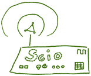
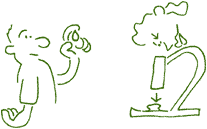

Untersuchungsmethoden
Diagnostik
Durch Gespräche und gezielte Diagnostik erarbeiten Sie und ich Lösungs-Möglichkeiten / Therapien, um im Einklang mit Ihrer Innen- und Aussenwelt Gesundheit zu finden und zu erhalten.
Annamnese
Zeitintensive Dokumentation Ihrer Krankengeschichte.
Bioresonanz mit dem QXCI-System - Diagnose und Therapie
Das QXCI-System oder SCIO ist ein moderner Hochleistungscomputer, also ein professionelles Werkzeug, das Ihren gegenwärtigen Gesundheitszustand präzise messen kann. Es arbeitet nach dem Bioresonanzprinzip. Krankhafte Veränderungen in Ihrem Körper werden erkannt und sofort therapiert.
Für die Erstuntersuchung und Therapie muss mit einem Zeitaufwand von etwa 1 1/2 Stunden gerechnet werden. Die Folgesitzungen dauern je nach Art der Beschwerden und Schwierigkeit ca. eine Stunde.
Die QXCI-Therapie ist weder belastend noch schmerzhaft und damit schon bei Kindern geeignet. Eine Altersbeschränkung gibt es nicht. Diese Form der Diagnose und Therapie wird seit Jahren weltweit bei vielen Patienten mit hohen Heilungserfolgen praktiziert.
Laboruntersuchungen
Gezielte Labordiagnostik zur Absicherung der Diagnose. Blutuntersuchungen werden nach vorheriger Terminvereinbarung durchgeführt.
Dunkelfeld-Diagnostik
Das Blut ist Informationsorgan Nr. 1. Es nimmt auf, gibt ab, versorgt und entsorgt.
Ein Tropfen Blut aus der Fingerbeere unter dem Mikroskop zeigt Ihnen den Zustand Ihres Stoffwechsels. Die Untersuchung im Dunkelfeldmikroskop eignet sich hervorragend für die Früherkennung, da Veränderungen des Blutbildes, die einer Erkrankung vorausgehen, hier bereits im Vorfeld erkannt und entsprechend behandelt werden können.
Via Mikroskop und Videokamera können Sie auf dem Monitor Ihr Blut in seiner Vielfalt als aussagekräftige Dokumentation des IST-Zustandes Ihres Stoffwechsels begreifen.
Die Dunkelfelddiagnostik gibt Ihnen Auskunft über:
- Die Qualität der weißen und roten Blutkörperchen (Größe, Form und Hämoglobingehalt).
- den Sauerstofftransport
- Eisenmangel oder Eisenverwertungsstörungen
- Säure-Basen Haushalt
- Entzündungen (akut oder abgelaufen)
- Leber-Darm-Nieren-Pankreas Belastungen
- Sklerosebelastungen
- zelluläre Erkrankungen (Anämie, Leikämie)
- Folsäure oder Vitamin B 12-Mangel
- Oxydativer Stress
- Fettstoffwechselstörungen
- Allergien
- Parasitenbefall
Am Ende der Untersuchung erhalten sie eine DVD, auf der das Untersuchungsergebnis in Ton und Bild aufgezeichnet wurde.
Immundignostik
Das Abwehrsystem ist Ihr biologisches ICH, das über Gesundheit und Krankheit entscheidet. In einem Labor wird der Immunstatus bestimmt, eine spezielle Blutuntersuchung, die nicht nur die Abwehrzellen (weisse Blutkörperchen) zählt, sondern auch die Qualität der Abwehrfähigkeit dieser weissen Blutkörperchen misst (Infektanfälligkeit - Krebserkrankungen - chronische Krankheiten - Neurodermitis - Allergien).
Stuhluntersuchung
Qualifizierte Ausgangsdiagnostik bei allen Befindlichkeitsstörungen des Darms, der Bauchorgane, bei allen chronischen Erkrankungen, Allergien. Bestimmt werden unter anderem:
- Dichte des Bakterien- und Pilz-Wachstums
- Verdauungsrückstände, die auf Verdauungsschwächen hinweisen
- Entzündungsparameter mit der Aussage einer m€glichen Entzündungs-Problematik
- die Durchlässigkeit der Darmschleimhaut
- Mikroblutungen in den Darm
- das Abwehrsystems des Darms
- Parasiten
- qualifizierte Tumormarker bei Darmkrebs
Neu im Diagnose-Programm ist die Untersuchung "Enterosan Junior" für Säuglinge und Kleinkinder und der "Vagicheck" bei therapieresistenten Erkrankungen der Vagina (Pilze/Bakterin).